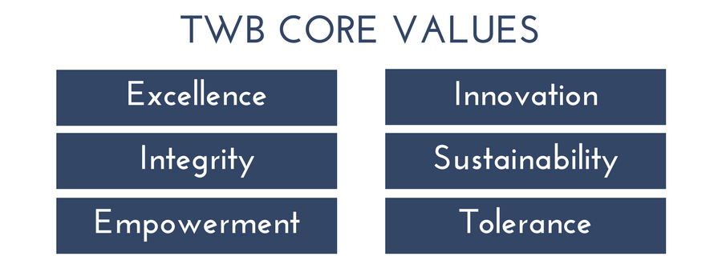

Translators without Borders (TWB) is a non-profit organization offering language and translation support for humanitarian and development agencies, and other non-profit organizations on a global scale.
Translators without Borders (TWB), originally founded in 1993 in France as Traducteurs sans Frontières by Lori Thicke and Ros Smith-Thomas to link the world’s translators to vetted non-profit organizations that focus on health, nutrition and education, is a U.S. non-profit organization that aims to close the language gaps that hinder critical humanitarian and international development efforts worldwide.
TWB recognizes that the effectiveness of any aid program depends on delivering information in the language of the affected population. By maintaining a global network of professional translators, TWB helps non-profit organizations overcome communication barriers, increasing access to critical information and services while fostering a climate of understanding, respect, and dignity in times of great need.
A world where knowledge knows no language barriers.
To provide people access to vital knowledge in their language by:
- Providing aid in humanitarian crisis response through translation and interpreting
- Providing translation and simplification services that are culturally appropriate, accessible and open-source
- Building language translation capacity at the local level
- Raising awareness globally of language barriers
TWB was formally incorporated as a 501(c)3 in the United States in 2011, and since that time, with the support of a community of volunteers, has translated over 50 million words for non-profit organizations in more than 190 language pairs, as part of humanitarian crisis response, and health and education programming. TWB has also provided training to local translators in Kenya and Guinea to support civic, health, and humanitarian efforts while providing them with new economic opportunities as translation professionals.

TWB translates more than ten million words per year for non-profit organizations by working with thousands of volunteer translators worldwide. Our work focuses on crisis response, development, capacity building, and advocacy. By specializing in language solutions, we provide meaningful and critical support that allows the core work of a wide range of non-profit and aid organizations to be more impactful and to better serve communities.
The work of Translators without Borders is focused on providing people with access to vital knowledge in their language by:
- Providing translations for non-profit organizations in the areas of crisis relief, health and education
- Building capacity by training new translators in under-resourced languages
- Raising awareness of why language matters in humanitarian work